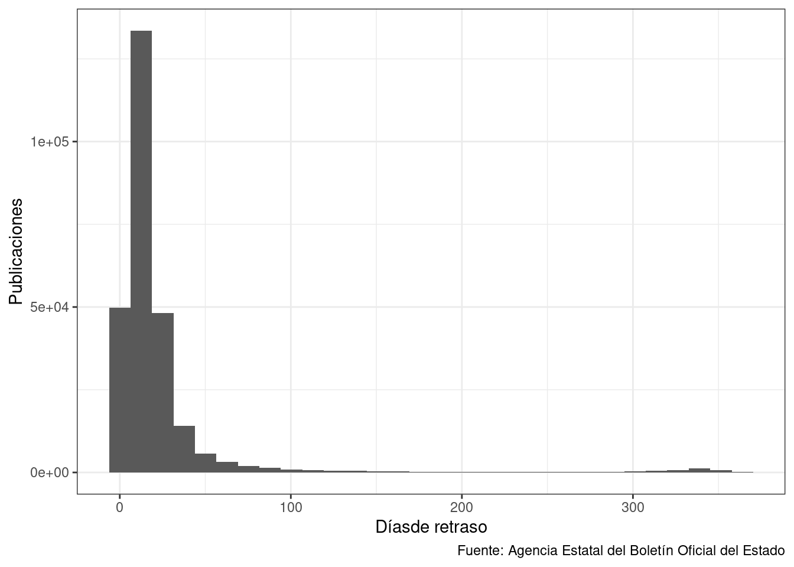
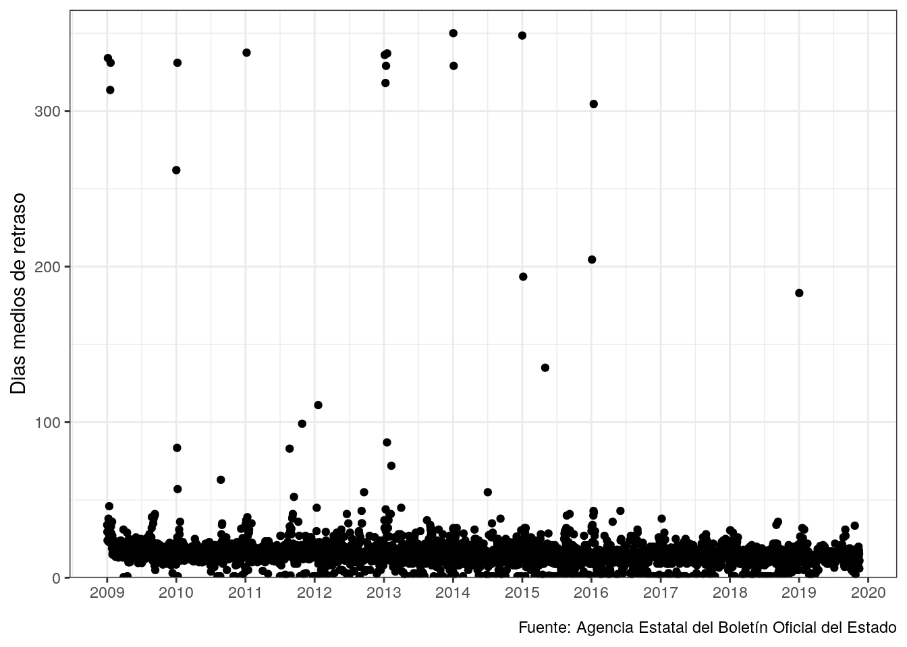
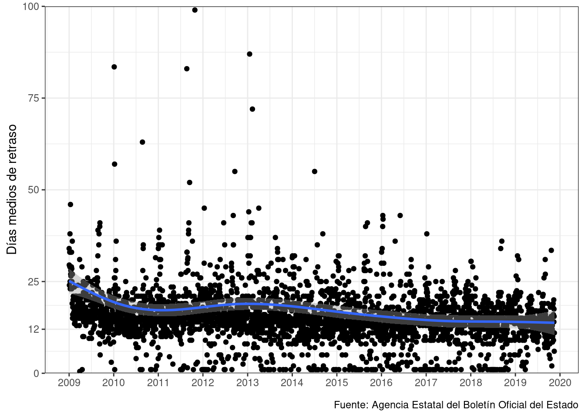
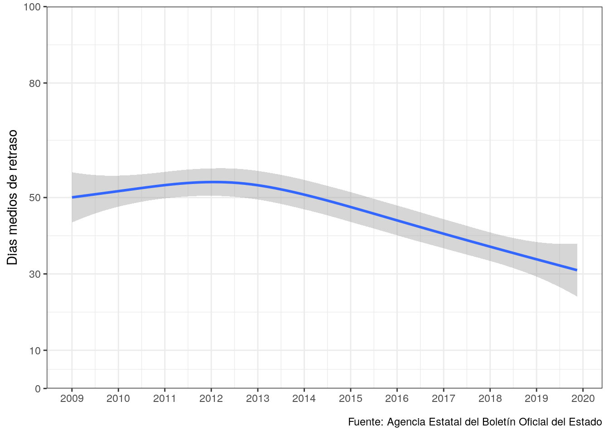

Tiempo entre decreto y publicación
Dias de retraso
Las disposiciones suelen ser efectivas a partir del momento de publicación o al día siguiente por eso es importante ver si hay retrasos entre aprovación y publicación.

Hay algunas fechas que estan escritas en vez de usar números:
## [1] "Instrumento de Ratificación del Protocolo número 13 al Convenio para la protección de los Derechos Humanos y las Libertades Fundamentales, relativo a la abolición de la pena de muerte en todas las circunstancias, hecho en Vilna el tres de mayo de dos mil dos."
## [2] "Instrumento de Ratificación del Convenio Civil sobre la Corrupción (número 174 del Consejo de Europa) hecho en Estrasburgo el cuatro de noviembre de mil novecientos noventa y nueve."
## [3] "Conflicto positivo de competencia n.º 6862-2012, contra la decisión del Gobierno Vasco de fecha indeterminada por la que acuerda que los trabajadores del sector público vasco cobren la paga extraordinaria de diciembre de 2012, \"así como respecto a las actuaciones o disposiciones que apliquen este criterio\"."
## [4] "Conflicto positivo de competencia n.º 6862-2012, contra la Decisión del Gobierno Vasco, de fecha indeterminada, por la que acuerda que los trabajadores del sector público vasco cobren la paga extraordinaria de diciembre de 2012, \"así como respecto a las actuaciones o disposiciones que apliquen este criterio\"."
## [5] "Intercambio de Cartas constitutivo de Acuerdo Administrativo Internacional entre el Reino de España y el Organismo Internacional de Energía Atómica (OIEA) para la celebración de un Taller Internacional sobre Cultura de la Seguridad Física Nuclear, del 29 de febrero al 4 de marzo de 2016, hecho en Viena el 20 de octubre y 24 de noviembre de 2015."Hay una publicación del 30 de marzo de 2010 que por fecha pone “el tres de mayo de dos mil dos”! y otras dos que no se sabe el dia que se tomaron y una con demasiadas fechas como para saber con exactitud que pasó.
También hay publicaciones que han tardado mucho en salir, o que hacen referencia a fechas muy anteriores (más de un año) :
Hay unas 1094 publicaciones donde las que la diferencia es de más de un año, algunas porque hay varias fechas (error mío), otras estan bien, se aprueban en 2019 cosas de 2007 o similares.
Sorprendentemente hay publicaciones que se han aprobado el mismo día:
| Fecha | Sección | Departamento | Epígrafe | Texto | |
|---|---|---|---|---|---|
| 1 | 2009-03-29 | I. Disposiciones generales | JEFATURA DEL ESTADO | Medidas financieras | Real Decreto-ley 4/2009, de 29 de marzo, por el que se autoriza la concesión de garantías derivadas de la financiación que pueda otorgar el Banco de España a favor de Caja de Ahorros de Castilla-La Mancha. |
| 2 | 2009-04-07 | I. Disposiciones generales | PRESIDENCIA DEL GOBIERNO | Organización | Real Decreto 542/2009, de 7 de abril, por el que se reestructuran los departamentos ministeriales. |
| 3 | 2009-04-07 | I. Disposiciones generales | PRESIDENCIA DEL GOBIERNO | Organización | Real Decreto 543/2009, de 7 de abril, sobre las Vicepresidencias del Gobierno. |
| 4 | 2009-04-07 |
|
PRESIDENCIA DEL GOBIERNO | Ceses | Real Decreto 544/2009, de 7 de abril, por el que se dispone el cese de don Pedro Solbes Mira como Vicepresidente Segundo del Gobierno. |
| 5 | 2009-04-07 |
|
PRESIDENCIA DEL GOBIERNO | Ceses | Real Decreto 545/2009, de 7 de abril, por el que se declara el cese de don Manuel Chaves González como Presidente de la Junta de Andalucía. |
| 6 | 2009-04-07 |
|
PRESIDENCIA DEL GOBIERNO | Ceses | Real Decreto 546/2009, de 7 de abril, por el que se dispone el cese de don Pedro Solbes Mira como Ministro de Economía y Hacienda. |
| 7 | 2009-04-07 |
|
PRESIDENCIA DEL GOBIERNO | Ceses | Real Decreto 547/2009, de 7 de abril, por el que se dispone el cese de doña Magdalena Álvarez Arza como Ministra de Fomento. |
| 8 | 2009-04-07 |
|
PRESIDENCIA DEL GOBIERNO | Ceses | Real Decreto 548/2009, de 7 de abril, por el que se dispone el cese de doña Mercedes Cabrera Calvo-Sotelo como Ministra de Educación, Política Social y Deporte. |
| 9 | 2009-04-07 |
|
PRESIDENCIA DEL GOBIERNO | Ceses | Real Decreto 549/2009, de 7 de abril, por el que se dispone el cese de doña Elena Salgado Méndez como Ministra de Administraciones Públicas. |
| 10 | 2009-04-07 |
|
PRESIDENCIA DEL GOBIERNO | Ceses | Real Decreto 550/2009, de 7 de abril, por el que se dispone el cese de don César Antonio Molina Sánchez como Ministro de Cultura. |
| 11 | 2009-04-07 |
|
PRESIDENCIA DEL GOBIERNO | Ceses | Real Decreto 551/2009, de 7 de abril, por el que se dispone el cese de don Bernat Soria Escoms como Ministro de Sanidad y Consumo. |
| 12 | 2009-04-07 |
|
PRESIDENCIA DEL GOBIERNO | Nombramientos | Real Decreto 552/2009, de 7 de abril, por el que se nombra Vicepresidenta Segunda del Gobierno a doña Elena Salgado Méndez. |
| 13 | 2009-04-07 |
|
PRESIDENCIA DEL GOBIERNO | Nombramientos | Real Decreto 553/2009, de 7 de abril, por el que se nombra Vicepresidente Tercero del Gobierno a don Manuel Chaves González. |
| 14 | 2009-04-07 |
|
PRESIDENCIA DEL GOBIERNO | Nombramientos | Real Decreto 554/2009, de 7 de abril, por el que se nombra Ministra de Economía y Hacienda a doña Elena Salgado Méndez. |
| 15 | 2009-04-07 |
|
PRESIDENCIA DEL GOBIERNO | Nombramientos | Real Decreto 555/2009, de 7 de abril, por el que se nombra Ministro de Fomento a don José Blanco López. |
| 16 | 2009-04-07 |
|
PRESIDENCIA DEL GOBIERNO | Nombramientos | Real Decreto 556/2009, de 7 de abril, por el que se nombra Ministro de Educación a don Ángel Gabilondo Pujol. |
| 17 | 2009-04-07 |
|
PRESIDENCIA DEL GOBIERNO | Nombramientos | Real Decreto 557/2009, de 7 de abril, por el que se nombra Ministro de Política Territorial a don Manuel Chaves González. |
| 18 | 2009-04-07 |
|
PRESIDENCIA DEL GOBIERNO | Nombramientos | Real Decreto 558/2009, de 7 de abril, por el que se nombra Ministra de Cultura a doña Ángeles González Sinde. |
| 19 | 2009-04-07 |
|
PRESIDENCIA DEL GOBIERNO | Nombramientos | Real Decreto 559/2009, de 7 de abril, por el que se nombra Ministra de Sanidad y Política Social a doña Trinidad Jiménez García-Herrera. |
| 20 | 2009-07-08 |
|
MINISTERIO DE JUSTICIA | Nombramientos | Orden JUS/1813/2009, de 8 de julio, por la que se nombran Abogados Fiscales a los alumnos del Centro de Estudios Jurídicos, correspondientes a la convocatoria aprobada por Acuerdo de la Comisión de Selección de Jueces y Fiscales de 5 de marzo de 2007. |
| 21 | 2010-02-05 | I. Disposiciones generales | JEFATURA DEL ESTADO | Navegación aérea | Real Decreto-ley 1/2010, de 5 de febrero, por el que se regula la prestación de servicios de tránsito aéreo, se establecen las obligaciones de los proveedores civiles de dichos servicios y se fijan determinadas condiciones laborales para los controladores civiles de tránsito aéreo. |
| 22 | 2010-04-29 |
|
MINISTERIO DE ECONOMÍA Y HACIENDA | Servicios mínimos | Orden EHA/1058/2010, de 29 de abril, por la que se establecen las normas para garantizar el funcionamiento de los servicios mínimos esenciales en la Corporación RTVE, S.A., y en las sociedades mercantiles estatales Televisión Española y Radio Nacional de España. |
| 23 | 2010-05-07 | I. Disposiciones generales | JEFATURA DEL ESTADO | Fondo de Apoyo | Real Decreto-ley 7/2010, de 7 de mayo, por el que se crea el Fondo de Apoyo a la República Helénica y se autoriza un crédito extraordinario por importe de 9.794.387.450 euros para su dotación. |
| 24 | 2010-05-22 |
|
BANCO DE ESPAÑA | Entidades de crédito | Resolución de 22 de mayo de 2010, del Fondo de Reestructuración Ordenada Bancaria, por la que se hace público el acuerdo de su Comisión Rectora de la misma fecha en relación con la Caja de Ahorros y Monte de Piedad de Córdoba. |
| 25 | 2010-12-03 | I. Disposiciones generales | JEFATURA DEL ESTADO | Empleo. Medidas urgentes | Real Decreto-ley 13/2010, de 3 de diciembre, de actuaciones en el ámbito fiscal, laboral y liberalizadoras para fomentar la inversión y la creación de empleo. |
| 26 | 2010-12-04 | I. Disposiciones generales | MINISTERIO DE LA PRESIDENCIA | Tráfico aéreo. Medidas extraordinarias | Real Decreto 1673/2010, de 4 de diciembre, por el que se declara el estado de alarma para la normalización del servicio público esencial del transporte aéreo. |
| 27 | 2011-09-27 | I. Disposiciones generales | JEFATURA DEL ESTADO | Constitución Española. Reforma | Reforma del artículo 135 de la Constitución Española, de 27 de septiembre de 2011. |
| 28 | 2011-10-26 | I. Disposiciones generales | COMUNIDAD AUTÓNOMA DEL PAÍS VASCO | Bibliotecas | Ley 11/2007, de 26 de octubre, de Bibliotecas de Euskadi. |
| 29 | 2012-08-31 | I. Disposiciones generales | JEFATURA DEL ESTADO | Entidades de crédito | Real Decreto-ley 24/2012, de 31 de agosto, de reestructuración y resolución de entidades de crédito. |
| 30 | 2014-03-24 | I. Disposiciones generales | PRESIDENCIA DEL GOBIERNO | Condecoraciones | Real Decreto 209/2014, de 24 de marzo, por el que se concede, a título póstumo, el Collar de la Real y Distinguida Orden Española de Carlos III al excelentísimo señor don Adolfo Suárez González, Presidente del Gobierno y duque de Suárez. |
| 31 | 2014-04-28 |
|
PRESIDENCIA DEL GOBIERNO | Ceses | Real Decreto 302/2014, de 28 de abril, por el que se dispone el cese de don Miguel Arias Cañete como Ministro de Agricultura, Alimentación y Medio Ambiente. |
| 32 | 2014-04-28 |
|
PRESIDENCIA DEL GOBIERNO | Nombramientos | Real Decreto 303/2014, de 28 de abril, por el que se nombra Ministra de Agricultura, Alimentación y Medio Ambiente a doña Isabel García Tejerina. |
| 33 | 2016-05-03 | I. Disposiciones generales | JEFATURA DEL ESTADO | Cortes Generales. Disolución y convocatoria de elecciones | Real Decreto 184/2016, de 3 de mayo, de disolución del Congreso de los Diputados y del Senado y de convocatoria de elecciones. |
| 34 | 2016-09-30 | I. Disposiciones generales | JEFATURA DEL ESTADO | Medidas tributarias | Real Decreto-ley 2/2016, de 30 de septiembre, por el que se introducen medidas tributarias dirigidas a la reducción del déficit público. |
| 35 | 2016-09-30 | I. Disposiciones generales | MINISTERIO DE HACIENDA Y ADMINISTRACIONES PÚBLICAS | Impuesto sobre Sociedades e Impuesto sobre la Renta de no Residentes | Orden HAP/1552/2016, de 30 de septiembre, por la que se modifica la Orden EHA/1721/2011, de 16 de junio, por la que se aprueba el modelo 222 para efectuar los pagos fraccionados a cuenta del Impuesto sobre Sociedades en régimen de consolidación fiscal estableciéndose las condiciones generales y el procedimiento para su presentación telemática, y la Orden HAP/2055/2012, de 28 de septiembre, por la que se aprueba el modelo 202 para efectuar los pagos fraccionados a cuenta del Impuesto sobre Sociedades y del Impuesto sobre la Renta de no Residentes correspondiente a establecimientos permanentes y entidades en régimen de atribución de rentas constituidas en el extranjero con presencia en territorio español, y se establecen las condiciones generales y el procedimiento para su presentación telemática. |
| 36 | 2017-10-27 | I. Disposiciones generales | CORTES GENERALES | Medidas al amparo del artículo 155 de la Constitución | Resolución de 27 de octubre de 2017, de la Presidencia del Senado, por la que se publica el Acuerdo del Pleno del Senado, por el que se aprueban las medidas requeridas por el Gobierno, al amparo del artículo 155 de la Constitución. |
| 37 | 2017-10-27 | I. Disposiciones generales | MINISTERIO DE LA PRESIDENCIA Y PARA LAS ADMINISTRACIONES TERRITORIALES | Medidas al amparo del artículo 155 de la Constitución | Orden PRA/1034/2017, de 27 de octubre, por la que se publica el Acuerdo del Consejo de Ministros de 21 de octubre de 2017, por el que, en aplicación de lo dispuesto en el artículo 155 de la Constitución, se tiene por no atendido el requerimiento planteado al M. H. Sr. Presidente de la Generalitat de Cataluña, para que la Generalitat de Cataluña proceda al cumplimiento de sus obligaciones constitucionales y a la cesación de sus actuaciones gravemente contrarias al interés general, y se proponen al Senado para su aprobación las medidas necesarias para garantizar el cumplimiento de las obligaciones constitucionales y para la protección del mencionado interés general. |
| 38 | 2017-10-28 |
|
MINISTERIO DEL INTERIOR | Ceses | Orden INT/1038/2017, de 28 de octubre, por la que se dispone el cese de don Josep Lluís Trapero Álvarez en la plaza de la categoría de Mayor de la Escala Superior del Cuerpo de Mossos d’Esquadra, para la que fue nombrado por Resolución INT/774/2017, de 11 de abril. |
| 39 | 2019-04-04 |
|
ADMINISTRACIÓN LOCAL | Personal funcionario y laboral | Resolución de 4 de abril de 2019, del Ayuntamiento de Berga (Barcelona), referente a la convocatoria para proveer varias plazas. |
| 40 | 2019-04-04 |
|
ADMINISTRACIÓN LOCAL | Personal funcionario y laboral | Resolución de 4 de abril de 2019, del Ayuntamiento de Berga (Barcelona), referente a la convocatoria para proveer varias plazas. |
| 41 | 2019-04-16 |
|
ADMINISTRACIÓN LOCAL | Personal funcionario y laboral | Resolución de 16 de abril de 2019, del Ayuntamiento de Gironella (Barcelona), referente a la convocatoria para proveer una plaza. |
| 42 | 2019-06-28 | I. Disposiciones generales | TRIBUNAL CONSTITUCIONAL | Recursos de inconstitucionalidad | Recurso de inconstitucionalidad n.º 976-2019, contra los artículos 1.1; 1.2; 2.1; 2.2 apartados d) y e) [en este último caso exclusivamente respecto de la mención al “pacto”]; 3; 4; 5.1; 5.2.b); 7.1.c); 9; 10.1; 13; 14 a 22; 25; 26.1, 2 y 3; 27; 32.a); 33.5, Disposiciones adicionales segunda y tercera, y Disposición final tercera de la Ley de las Cortes de Aragón 8/2018, de 28 de junio, de actualización de los derechos históricos de Aragón. |
| 43 | 2019-09-24 | I. Disposiciones generales | JEFATURA DEL ESTADO | Cortes Generales. Disolución y convocatoria de elecciones | Real Decreto 551/2019, de 24 de septiembre, de disolución del Congreso de los Diputados y del Senado y de convocatoria de elecciones. |
Si miramos la tendencia general vemos que hay algunos días (generalmente hacia principio de año) que se apruevan cosas de hace casi un año:

Aunque la tendencia es a reducir el tiempo entre aprovación y publicación, hay un retraso entre aprovado y publicado de unos 12 días habitualmente.
En cambio si miramos todas las publicaciones vemos que la tendencia es a reducir pero que la mayoría de publicaciones tienen una tardanza de unos 30 días:
